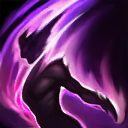
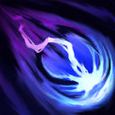
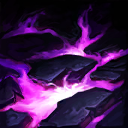

核心裝備
 黑焰火炬
黑焰火炬 瑞萊的冰晶節杖
瑞萊的冰晶節杖 黎安卓的折磨
黎安卓的折磨 視界專注
視界專注 黑魔禁書
黑魔禁書

以下為本站 7.2d 校正後的標準配置；實戰仍需依敵方陣容調整。


技能優先：Q > E > W

對敵方英雄、大型士兵以及中大型野怪造成技能傷害時回復自身生命，提高持續消耗與推線續航。

射出黑暗能量，命中第一個敵人時造成魔法傷害並長時間禁錮，是抓人與反開的核心技能。

詛咒指定區域並持續造成魔法傷害，目標生命越低傷害越高；被動治療可協助縮短冷卻。
為友軍英雄套上魔法護盾，吸收魔法傷害，並在護盾存在期間免疫多數控制效果。
以鎖鏈連結附近敵方英雄，造成傷害與緩速；未能掙脫鎖鏈者在延遲後再次受傷並被暈眩。
1技禁錮命中 → 2技鋪在目標腳下 → 普攻補傷害 → 點燃壓制回復
一技命中後再放二技，避免先鋪地讓敵人直接走開。點燃留給確定能壓入擊殺線的換血。
3技替主力擋控制 → 1技反手禁錮 → 2技持續輸出 → 4技連結追擊者 → 保持鎖鏈距離
黑盾優先擋最關鍵的控制，不要只為一般魔法傷害過早消耗。禁錮命中後再決定是否開大追控。
3技自我黑盾 → 閃現進入多人範圍 → 4技連結敵群 → 2技鋪地 → 1技封鎖逃跑路線
先套黑盾避免進場立刻被控。大絕後持續貼近目標，必要時使用保命附魔拖到第二段暈眩。
暗影禁錮飛行速度不快，先利用草叢、兵線側面或敵人補刀動作預判，不要正面反覆空丟。命中後立刻把痛苦腐蝕鋪在目標腳下，讓持續傷害完整生效。黑暗之盾應留給真正的魔法控制技能，面對鉤子、暈眩與擊飛時提前套在可能被開的射手身上。
在河道與物件入口用一技封鎖窄口，二技可持續消耗並逼迫敵人離開站位。敵方準備強開時，把黑盾交給最需要維持輸出的核心；需要主動進場則先自我套盾，再閃現開靈魂枷鎖。鎖鏈期間靠近敵人會提高追擊能力，必要時使用保命附魔等待第二段暈眩。
站在主力後方偏側面，持續用禁錮威脅通道與草叢。敵方刺客進場時先給主力黑盾，再以一技反控；若對手站位密集，可自我套盾閃現大絕分割戰場。大絕鏈條可被拉斷，因此最好等敵方位移交出或隊友已先控制後再施放。
對局名單是本站依英雄機制與目前配置整理的參考，不等同固定勝率。
輔助調整以團隊承傷、解控與保護主力為優先，不為了單一敵人破壞整套功能裝。
觸發：敵方主要輸出集中在射手、物理刺客或普攻型英雄。
中婭沙漏用物防與凝滯提高自保，避免輔助先被秒。
觸發：敵方主要威脅來自法師、AP刺客或大量範圍魔法傷害。
女妖面紗提供魔防與法術護盾，適合保住自己的第一輪功能。
觸發：敵方硬控能直接抓死己方主力，或你進場後會被連續控制。
女妖面紗的法術護盾能先擋一次關鍵技能，讓法師保留施法空間。
堅毅提供韌性，受到硬控時也能短暫提高雙防。
提醒：米凱主要替隊友解控；水星彎刀則是物理英雄自我解控，兩者角色不同。
觸發：敵方有大量治療、吸血或回復，讓己方集火很難完成擊殺。
標準配置已經有重創，不必重複購買。
觸發：己方只有一個主要輸出點，且敵方每波團戰都會集中切入他。
犧牲一個後期輸出位換日輪，讓輔助位的團隊價值高於個人傷害。
提醒：保排調整看己方陣容，不是看到敵方刺客就把所有功能裝都換成防裝。
7.2a 輔助路第三批正式攻略：技能名稱與核心機制依 Riot Games 台灣《激鬥峽谷》魔甘娜英雄頁校正，版本基準採官方 7.2a 更新公告；出裝、符文、召喚師技能、技能順序與對局方向依本站輔助資料整合。Tier 維持本站既有輔助路評級。｜v72：套用瑟雷西 v69 輔助固定母版。
本站於 2026-08-27 依 Patch 7.2d 重新檢查此配置。 Tier、出裝、符文與對局屬於 Wild Rift Guide 的整理與分析，不是 Riot Games 官方推薦；版本改動後會再依官方公告與實戰資料校正。